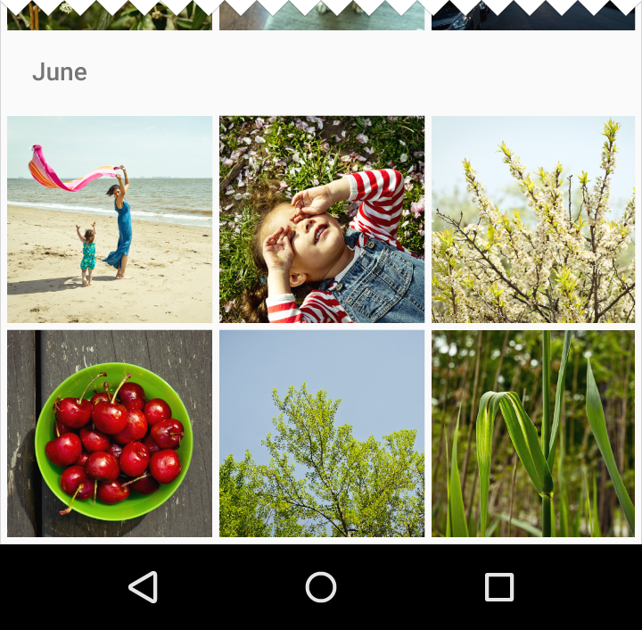
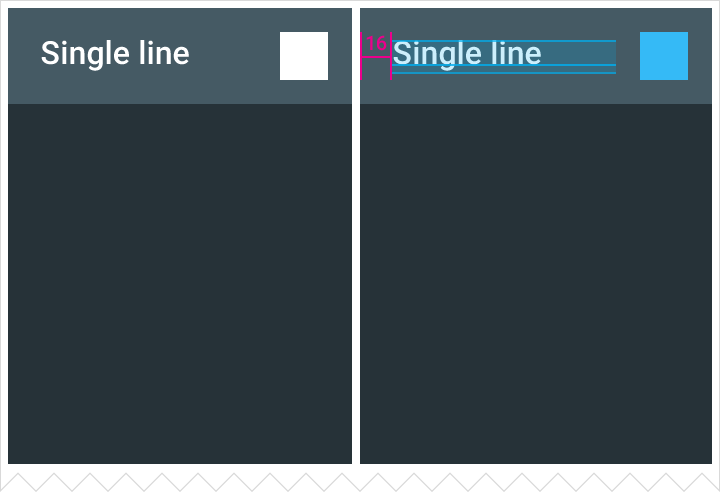

A grid list is best suited to presenting a homogenous data type, typically images, and is optimized for visual comprehension and differentiating between like data types.
A grid list is a continuous element consisting of tessellated, regular subdivisions called cells that contain tiles.
Cells are arrayed vertically and horizontally within the grid.
Tiles hold content and can span one or more cells vertically or horizontally.
If the text in tiles needs to be prominent enough to distinguish between primary content pieces, consider using a different container, like a list or cards, optimized for displaying text and facilitating reading comprehension.
Lists: Optimized for reading comprehension, particularly when comparing a set of data containing multiple data types.
Cards: Used for content with inconsistent formatting, such as photos with captions of variable length, or data sets with heterogeneous content, such as a mixed collection of photos and videos and books.
Content
Content in tiles
Tile content consists of primary content and secondary content. Primary content is the main differentiating element, typically an image. Secondary content can be an action or text.
Provide a default image for tiles that lack an image for primary content.
Actions in tiles
Actions on both primary and secondary content—such as play, zoom in, delete, or select—are immediate and typically do not result in a submenu of options (action overflow) within the grid list.
Actions can open a subsequent view, such as a card.
Primary actions
Fill the entire tile and therefore are not represented via icons or text.
Are consistent throughout tiles in a specific grid. For example, the primary action for all tiles in a single grid could be to view details for an image.
Secondary actions or content
Are represented in tiles with icons or text.
Are consistent throughout tiles in a specific grid.
Are placed in a consistent location within the tiles of a specific grid, but that consistent location may vary between grids (at corners or edges). For example, all titles in a grid could be located at the bottom left corner.
Behavior
Scrolling
Grids typically scroll only vertically.
Horizontally scrolling grids are discouraged because the scrolling interferes with typical reading patterns, affecting comprehension.
Cut off grid tiles to communicate the scroll direction for content overflow.
Indicate content overflow by cutting off grid tiles.

Gestures
Per-tile swipe actions are not permitted. Pick-up-and-move actions are discouraged.
Tile filtering and sorting
Content in a grid list can be programmatically filtered or sorted by date, file size, alphabetical order, or other parameters.
The first item in the grid is positioned at the top left of the grid, and the order proceeds left to right and top to bottom.
Dimensions and resizing
Resizing a grid list causes the tiles to re-sort as horizontal space becomes available. Tiles do not scale to fill available horizontal space.
A grid list does not transform into a list when horizontal space contracts. Grid lists and lists are separate structures for emphasizing different data types. Grid lists prioritize images over text and lists prioritize text over images.
Specs
Grid list header/footers
Single-line header/footer
Height: 48dp
Text padding: 16dp
Default font size: 16sp
Secondary action is flush right to the footer.
Two-line header/footer
Height: 68dp
Text padding: 16dp
Default font size for each line: 16sp/12sp or 14sp/14sp
Image-only grid list
Grid padding: 4dp or 1dp
Tiles in grid lists can span multiple columns.
Carefully consider whether secondary text is needed in grid lists that use multi-column tiles, as larger tiles can develop significant empty space.
Element
Context
Single-line grid list
Text only
Height: 48dp
Text padding: 16dp
Default font size: 16sp
Grid padding: 4dp or 1dp
Element
Context
Text with icon
Height: 48dp
Text padding: 16dp
Default font size: 16sp
Grid padding: 4dp or 1dp
The secondary action can be flush right or flush left within the footer or header.

Element
Context
Two-line grid list
Text only
Height: 68dp
Text padding: 16dp
Default font size for each line:16sp/12sp or 14sp/14sp
Grid padding: 4dp or 1dp
Element
Context, 1dp example
Context, 4dp example
Text with icon
Height: 68dp
Text padding: 16dp
Default font size for each line: 16sp/12sp or 14sp/14sp
The secondary action can be flush right or flush left within the footer or header.